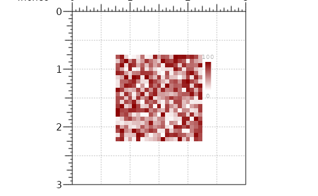
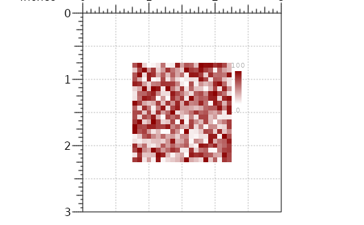

Used to plot single or aggregate matrix such as aggregate peak analysis.
Usage
plotMatrix(
data,
params = NULL,
x = NULL,
y = NULL,
width = NULL,
height = NULL,
just = c("left", "top"),
default.units = "inches",
draw = TRUE,
palette = colorRampPalette(RColorBrewer::brewer.pal(9, "YlGnBu")),
zrange = NULL,
na.color = "grey"
)
# S4 method for DelayedMatrix_OR_matrix
plotMatrix(
data,
params = NULL,
x = NULL,
y = NULL,
width = NULL,
height = NULL,
just = c("left", "top"),
default.units = "inches",
draw = TRUE,
palette = colorRampPalette(RColorBrewer::brewer.pal(9, "YlGnBu")),
zrange = NULL,
na.color = "grey"
)Arguments
- data
`DelayedMatrix`, `matrix`, list of matrices, or 3 column `data.frame` of APA results.
- params
Optional `pgParams` object containing relevant function parameters.
- x
Numeric or unit object specifying the x-location of plot.
- y
Numeric or unit object specifying the y-location of plot.
- width
Numeric or unit object specifying the width of plot.
- height
Numeric or unit object specifying the height of plot.
- just
String or numeric vector specifying the justification of the viewport relative to its (x, y) location.
- default.units
String indicating the default units to use if `x`, `y`, `width`, or `height` are only given as numeric vectors.
- draw
Logical value indicating whether graphics output should be produced.
- palette
`colorRampPalette` function to use for mapping values to colors.
- zrange
Vector of length 2; max and min values to set color scale
- na.color
String indicating the color to use for mapping NA values.
Examples
library(plotgardener)
#>
#> Attaching package: ‘plotgardener’
#> The following object is masked from ‘package:base’:
#>
#> c
library(RColorBrewer)
## Create divergent matrix ####
m <- matrix(data=rnorm(n=21*21, mean=0, sd=2), nrow=21, ncol=21)
## Define parameters
p <- pgParams(width=3, height=3, default.units="inches")
## Create page
pageCreate(params=p)
## Plot apa
plot <- plotMatrix(data=m,
x=p$width/2,
y=p$height/2,
width=p$width*0.5, height = p$width*0.5,
just=c("center", "center"),
palette=colorRampPalette(c("blue", "white", "red")),
zrange=NULL)
#> MatrixPlot[MatrixPlot1]
## Annotate legend
annoHeatmapLegend(plot=plot,
x=2.3,
y=0.75,
width=0.1,
height=0.75)
#> heatmapLegend[heatmapLegend1]
 ## Create sequential matrix
m <- matrix(data=sample(0:100, 21*21, replace=TRUE), nrow=21, ncol=21)
## Define parameters
p <- pgParams(width=3, height=3, default.units="inches")
## Create page
pageCreate(params=p)
## Plot apa
plot <- plotMatrix(data=m,
x=p$width/2,
y=p$height/2,
width=p$width*0.5,
height=p$width*0.5,
just=c("center", "center"),
palette=colorRampPalette(c("white", "dark red")),
zrange = NULL)
#> MatrixPlot[MatrixPlot1]
## Annotate legend
annoHeatmapLegend(plot=plot,
x=2.3,
y=0.75,
width=0.1,
height=0.75)
#> heatmapLegend[heatmapLegend1]

## Create sequential matrix
m <- matrix(data=sample(0:100, 21*21, replace=TRUE), nrow=21, ncol=21)
## Define parameters
p <- pgParams(width=3, height=3, default.units="inches")
## Create page
pageCreate(params=p)
## Plot apa
plot <- plotMatrix(data=m,
x=p$width/2,
y=p$height/2,
width=p$width*0.5,
height=p$width*0.5,
just=c("center", "center"),
palette=colorRampPalette(c("white", "dark red")),
zrange = NULL)
#> MatrixPlot[MatrixPlot1]
## Annotate legend
annoHeatmapLegend(plot=plot,
x=2.3,
y=0.75,
width=0.1,
height=0.75)
#> heatmapLegend[heatmapLegend1]
